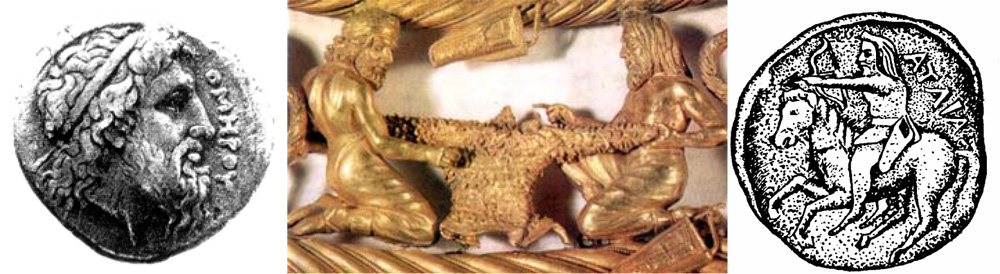

«Бути або не бути?
Найголовніше в цій формулі –
«або» …
К. Кедров
На перший погляд між цими назвами немає нічого спільного. Легенди про сфінкса зустрічаються в Єгипті з часів Стародавнього царства (2707-2150 рр. до н.е.). Сама назва Сфінкс звучить на давньоєгипетській мові – «шепсес анх» і перекладається, як «живий образ». Припускають, що образ єгипетського сфінкса був запозичений стародавніми греками, в їх міфології (Гесіод, “Теогонія”, 326) Сфінкс (Σφίγξ – «Душителька») – чудовисько, породжене Єхидною, з обличчям і грудьми жінки, тілом лева і крилами птаха. Гера наслала її на Фіви в покарання, і вона кожному, хто входить в місто, задавала одне питання, а всіх, хто не зумів дати правильну відповідь, вбивала. Едіпові єдиному вдалося відповісти на її запитання, після чого вона кинулася з гори і розбилася. Що стосується імені скіфів (Σκύθαι – «Похмурий»), то цю назву було дано древніми греками групі іраномовних народів, що проживали на території нинішніх Молдавії, України, Південної Росії, Казахстану і частини Сибіру. Вважається, що воно вперше згадано в «Історії» Геродота (484-425 рр. до н.е.). Насправді, імена «Сфінкс» та «Скіф» об’єднує те, що їх створив, ймовірно, Гомер.
Життя наше подібне Сфінкс, бо за всю історію розвитку людства накопичилося чимало таких вбивчих питань, на розгадку яких багато людей принесли в жертву свої життя, а відповіді на них так і не були знайдені. Серед них є і питання, залишені творцем міфу про семибрамних Фівах, він же, ймовірно, придумав ім’я Сфінкс. Відразу ж зазначу (без обговорення, бо ця тема вимагає окремої розповіді), що Гесіода не існувало. Це був псевдонім Гомера, і саме йому належать всі твори Гесіода, в тому числі й «Теогонія», де згадана Сфінкс. В основі цього твердження лежать, знайдені автором статті, приховані вірші у всіх відомих творах Гесіода. У них описуються невідомі деталі біографії Гомера. З безлічі «вбивчих» питань Сфінкс, розглянемо тут тільки три: чому досі залишається невідомою біографія Гомера, що насправді означає ім’я Гомер, і чому жодне з, приписуваних йому сьогодні, творів не було підписано ним цим ім’ям, і чому в них не згадано ім’я скіфів?». У «Іліаді» (XI , 572 ) говориться про скіфське плем’я будинів (Βουδέιω), в «Одіссеї» (XI, 14) згадані місто і народ кіммерійський (Κιμμερίων), 25 раз названі в «Іліаді» фракійці (Θρήκιος) і всього лише один раз – в «Одіссеї» (VIII.361), а от ім’я скіфів відсутнє. Виникає питання: чому?
Найпростіша відповідь полягає в тому, що під час життя Гомера скіфи ще не існували, або не вийшли на авансцену історії, або взагалі в природі ще не було цього імені. А оскільки Гомер не вжив імені скіфів, а згадав кіммерійців, то всі сьогоднішні енциклопедії світу дружно віднесли час його життя до VIII-IX ст. до н.е., тобто до епохи кіммерійців. Але, чи так це було насправді?
Про те, що кіммерійці та скіфи існували ще в XV ст. до н.е. ми знаємо з «П’ятикнижжя» Мойсея, в якому наведена наступний родовід сина Ноя, Яфета, що врятувався після Всесвітнього потопу (Бут. X, 2): Гомер (кіммерійці), Іован (греки), Магог (скіфи), Мадай (мидийці), Тувал (грузини), Мешех (мосхи) і Тірас (фракійці). У цій «Таблиці народів», насамперед, зафіксовано не тільки спорідненість, а й старшинство народів за часом їх виникнення, тобто кіммерійці більш давній народ, ніж греки і скіфи. Зрозуміло, не слід розуміти буквально, що всі народи на Землі походять від Адама, і що до XIV ст. до н.е. (час життя Мойсея) спостерігався Всесвітній Потоп. Потопу, як глобального явища в XIX -XV ст. до н.е., імовірно, не було, бо немає належного підтвердження в науці. Взагалі кажучи, згадка про всесвітній потоп є в ще більш давньому епосі про Гільгамеша. Приватне явище затоплення берегів Середземномор’я цунамі спостерігалося після найпотужнішого вибуху вулкану Санторін (сер. XV в. до н.е.), що призвів до загибелі Крито-мінойської культури і Атлантиди. З прихованих віршів Гомера випливає, що Атлантида знаходилася в Криму, в районі Євпаторії. З’ясувалося, що основним джерелом інформації про Атлантиду є не Солон, а давній рід Гомера і відомості, знайдені ним в Єгипті. Як бачимо, ця подія була близькою до часу створення Мойсеєм свого П’ятикнижжя. Перші християнські богослови попереджали нас від прямолінійного читання Святого Письма. Оріген (185-253/4) писав: «Буквальний зміст часто має невірне, безглузде, суперечливе, неможливе, марне значення з якого випливає тьма помилок», а Григорій Ніський (бл. 330-390 ) прямо заявив: «Не треба бути настільки недалеким, щоб розуміти Писання буквально».
Так от, на мій погляд, алегоричним змістом Всесвітнього Потопу був вибуховий розвиток кораблебудування в XX-XV ст. до н.е. Саме воно дало потужний поштовх не тільки розвитку цивілізації, як такої, а й зупинило виродження народів від інцесту. З «Буття» Мойсея видно, що 9 поколінь, від Адама до Ноя, вели замкнутий спосіб життя всередині одного роду і тому спостерігалося виродження племен через інцест. Так що, цілком обгрунтовано можна припустити, що в Біблії вказано не час життя однієї людини, а час виродження племені, заснованого одним з 9 -ти нащадків Адама, в межах 600-960 років. І це було покарання Господнє розбещеному людському роду (Бут. 6-8). Можна сказати, що Ной був першим корабельником, який був врятований Богом, як праведник, тільки за те, що діти його були народжені не в інцесті. Про це говорять, різноплемінні імена синів Яфета. З родоводу, наведеного в Старому Завіті, видно, що вік життя нащадків Адама повернувся до реального не відразу, а тільки в 26 коліні від Адама, тобто за часів життя Мойсея (1350-1230 рр. до н.е.). Таким чином, для ослаблення виродження знадобилося близько 800 років після Ноя. Ще одне важливе уточнення Бог зробив Ною за 7 днів до Потопу, щоб він взяв не по парі, а по сім пар, всієї живності з собою (Бут. 7, 3). І це було алегоричною вказівкою на те, що вплив інцесту слабшає не раніше, ніж через 7 колін в одному роді. Ось чому, щоб уникнути наслідків інцесту, надалі один царський рід в Європі міг поєднатися з іншим тільки в тому випадку, якщо в їх роду не було близьких родичів до 7-го коліна. Крім того, не зайве буде підкреслити тут ще й ту деталь, яка характеризує дальність плавання кораблів за часів Ноя тривалістю потопу в 40 днів. За оцінками, наведеними Гомером в «Одіссеї» (XIV, 257), за цей час кораблі могли пройти відстань від Єгипту до протоки Гібралтар, рівне 4000-5000 км . А тупорилий Ноїв ковчег, докладно описаний в П’ятикнижжі (Бут. 6, 15-17), міг за 40 днів подолати відстань не більше 1500 км і саме тому він виявився алегорично на горі Арарат.
У статті «Гомер – міф чи реальність?», опублікованій в журналі ПОет (№ 1, 2011 р., с. 33 – 36), мною показано, що Гомер жив у 657-581 рр. до н.е. У той час скіфи не тільки вийшли на авансцену історії, але, по суті, витіснили кіммерійців з рідних місць і це найдавніше войовниче плем’я спочатку виявилося розсіяним серед тих же скіфів та інших племен, а потім і припинило своє існування. Точної дати цього витіснення немає ні в істориків, ні у археологів. До того ж, цей процес не був одномоментним і розтягнувся на одне або два століття. Справа в тому , що немає разючої відмінності культур між кіммерійцями і скіфами, на підставі якій археологи зазвичай роблять свої висновки, а це говорить, по-перше, про спорідненість (у Мойсея кіммеріец Гомер і скіф Магог – брати), а , по-друге, про те, що при цьому мало місце як витіснення, так і взаємопроникнення племен. Прямим доказом цього є розповідь Геродота («Історія», IV, 11) про битву кіммерійських вождів між собою. Одна частина з них не хотіла покидати рідних місць, а інша хотіла піти від сильного війська наступаючих скіфів до Малої Азії. Так от, та частина племені вождів кіммерійських, які вирішили залишитися на батьківщині в Гілеї (нині Миколаївська область України) стала називатися царськими скіфами, саме з цього роду і походив Гомер.
Потрібно підкреслити, що 7-річний період перебування Гомера в Єгипті з 629 по 622 рр. до н.е. і ще рік у Фінікії у батьків своєї матері в м. Сидоні (Сайда), зіграв вирішальну роль у його духовному зростанні (див. книгу А. Золотухін, «Гомер. Іманентна біографія», Миколаїв, 2001). Перебуваючи на службі у Псамметиха I, він мав можливість познайомитися з найвидатнішими вченими і жерцями Єгипту. Зрозуміло, він бачив у пірамід Гізи Сфінкс. Але, мабуть, найголовнішим було те, що він познайомився з літературними творами шумеро-аккадської, єгипетської, староєврейської літератури, зібрав відомості про Атлантиду, а також з географії та астрономії. Саме після знайомства з П’ятикнижжям Мойсея, він привласнив собі ім’я Гомера, як далекого свого предка кіммерійського роду, з якого походив він сам. Своїм походженням від атлантів – кіммерійців він дуже пишався і тому не вважав себе варваром в порівнянні з греками. З давньоєврейської мови ім’я Гомер перекладається, як «Завершеність, досконалість». Зрозуміло, у своїй творчості Гомер користувався тільки давньо-грецьким тлумаченням цього імені. Однак, воно має два різних перекладу: «сліпець» і «заручник». Для того, щоб піти від тлумачення його імені як заручника, яким він був насправді, Гомер у своїх міфах і епосах ввів таких сліпих співаків-пророків, як Фіней («Аргонавтика»), Демодок, Тіресій («Одіссея») і Тамір Фракийский («Іліада»). Все це дало привід історикам зображати поета сліпим. Його творчість однозначно свідчить про те, що він не був сліпим. Насправді Гомер був заручником свого варварського походження, яке ускладнило визнання його творів у Греції. Саме це і змусило Гомера публікувати свої праці під псевдонімом грека Гесіода.
Взагалі кажучи, парадоксальну ситуацію, що склалася у зв’язку з відсутністю біографії Гомера, неможливо пояснити нічим іншим, крім як його варварським походженням. Якби Гомер був греком, то що могло йому перешкодити написати свою біографію, хай не такого величезного обсягу, як його епоси? Слідом за цим тепер, коли точно встановлено дати життя Гомера, виникає ще більш дивне запитання: чому багато сучасників Гомера не залишили жодних свідчень про це? Адже Нестор, Солон і Писистрат знали його особисто, і майже всі знали, де він жив. Адже м. Калліополь було назване греками на честь музи епосу тому, що саме в ньому Гомер написав «Одіссею». Туди він був висланий на 10 років після вбивства наречених Пенелопи. Солон і Писистрат заснували навіть Панафинеи з публічним читанням на них «Іліади» та «Одіссеї». Взагалі кажучи, при тій популярності творів Гомера, які вони мали за його життя, будь-яка, навіть скромна біографія, написана ним самим або його сучасниками, викликала б в Греції колосальний інтерес. У зв’язку з цим виникає третє, цілком логічне запитання: чим пояснюється це тотальне мовчання, як самого Гомера, так і його сучасників? Чому мовчали не тільки сучасники, але навіть їхні далекі нащадки, яким вони напевно усно передали справжні відомості про Гомера? Про скіфів не говоритимемо – у них не було писемності, хоча вони знали і шанували Гомера. З «Борисфенітській промови» Діона Хрисостома (бл. 40-120 рр.), записаної в Ольвії в 95 р. н.е., тобто через 700 років після життя Гомера (!), де він з подивом відзначив, що майже всі громадяни Ольвії читають Гомера, знають напам’ять «Іліаду», і шанують Ахілла, як божество. Нам тепер уже ясно, чому ольвіополіти, будучи краянами Гомера, так ревно ставилися до нього і його брата Ахілла. Але, виникає питання: чому Хрисостом, вживши там оборот «ваш Гомер», ні словом не обмовився про те, що Гомер був їх земляком? Упевнений, що ольвіополіти напевно йому говорили про це, але він навіть і думки не допускав подібної,- чому?..
Парадоксальну ситуацію, що виникла навколо біографії Гомера, дозволяє одне дуже важливе висловлювання сучасника Гомера, першого грецького філософа, одного з семи мудреців Стародавньої Греції, Фалеса Мілетського (624-546 рр. до н.е.), який говорив: «За три речі вдячний я долі: по-перше, що я людина, а не тварина; по-друге, що я чоловік, а не жінка; по-третє, що я еллін, а не варвар». Отже, як бачимо, парадокс пояснюється просто і грунтовно – Гомер в очах греків був варваром, тобто за визначенням, іноземець, безкультурний, грубий, який розмовляв на незрозумілій і невиразній мові. Родоначальник давньогрецької культури був варваром?!,- а от з цим греки ніяк не хотіли погоджуватися! Гомер це розумів і, судячи з усього, зовні сприймав, але внутрішньо не міг погодитися з цим, бо любив свою батьківщину: «Кращого-бо за вітчизну нічого немає і за рідних» («Одіссея», IX, 34).
І тоді виник мовчазний історичний компроміс, який протримався 2582 р. до виходу в світ в 2001 р. моєї книги «Гомер. Іманентна біографія». Суть компромісу полягала в наступному: Гомер відкрито не описував варварський світ, не говорив про своє варварське походження і навіть взагалі не підписував твори своїм ім’ям, а греки, в свою чергу, ніде не називали його варваром. Так виявилося, що з мовчазної згоди обох сторін був створений міф про виключно грецьке походження Гомера. Як відомо, про честь бути батьківщиною Гомера сперечалось сім міст: Кума, Смірна, Хіос, Колофон, Пафос, Аргос, Афіни. Насправді список цих міст доходив до 20. Однак, навіть у цей, розширений список не ввійшли, такі грецькі міста як Елай (нині турецьке м. Седдюльбахір) і Калліополь (поблизу селища Капакли Гемлікского району провінції Бурса, Туреччина), де на справді жив Гомер. І це теж невипадково, бо ці міста були засновані варварами, що неминуче кидало б тінь на його грецьке походження. Так, історикам відомо, що спочатку м. Елай (Антандр), який в «Одіссеї» описаний як Ітака (алегоричний сенс цього імені – «Моє місто»), називався Кіммерідою. Цим містом володіли кіммерійці протягом 100 років. А заклав це місто , як з’ясувалося з прихованих віршів Гомера, в 749 р. до н.е. його прапрадід, Таргітай, засновник скіфського роду за Геродотом. Що вже в такому випадку говорити про м. Ольвії-1 у Скіфії (м. Миколаїв), де народився і жив Гомер до 11 років? Скіфський цар Пан спочатку вигнав звідси батька, а за ним біжав Гомер з сестрою Оленою і її першим чоловіком Гефестом. Його брат-близнюк, Ахілл, до 15 років з матір’ю залишався в полоні у Пана. Це була перша Ольвія, заснована Таргітаєм в 753 р. до н.е, поряд з двома іншими містами Бореєм, пізніше Борисфеном, і Нісоном. Знаходилася перша Ольвія в районі Табірного поля у м. Миколаєві (Україна). Проте, життя цього міста було коротким, не більше 3-4-х століть. Ольвію-1 (поселення борисфенітів) бачив Геродот в 450 р. до н.е. поруч з храмом Деметри. Зате друга Ольвія (біля села Парутине в Миколаївській області), заснована Ахіллом і Музою Гомера , Клеопатрою, в 624 р. до н.е., виявилася, дійсно «Щасливою», бо проіснувала більше 1000 років.
Але, виникає питання, якою була ціна відкритого угодовства Гомера з виключно грецьким походженням, у порівнянні з «варварським»? По-перше, це не було повною зрадою, оскільки мати Гомера вважалася грекинею. По-друге, і це було головним, саме повне грецьке походження і звернення виключно до грецькому світу давало йому надію на тривале збереження його творів у середовищі грецької культури, бо у скіфів не було писемності. До нашого часу не дійшли ні поема «Арімаспея» в 3 -х томах, створена вчителем і прадідом Гомера Арпоксаєм (Арістеєм Проконесським – Оленем), ні 800 віршів Анахарсіса (Телемаха), сина Гомера. Причина одна – обидва вони для греків були варварами і описували варварський світ. І, по-третє, Гомер, вважаючи себе нащадком кіммерійців з Атлантиди, колишніх сучасниками крито-мінойської культури, намагався довести грекам, що його рід ніяк не можна було вважати варварським.
З цієї трагічної ситуації Гомер знайшов вихід, цілком гідний генія,- він у всіх своїх творах впровадив приховані вірші, зміст яких описує його біографію. Саме тому йому не потрібно було підписувати ім’ям Гомера свої твори і писати свою автобіографію. Фактично з винаходом прихованих віршів, поет розробив таємний спосіб захисту авторських прав. Як бачимо, Гомер, вирішуючи цілком гамлетівське питання «Бути або не бути?», вибрав саме золоту середину «або», за К. Кедровим, як найголовніше, як свободу, і не прогадав. В результаті цієї подвійної бухгалтерії засновнику європейської культури вдалося описати історію не тільки грецької (відкрито – «Метаметафора»), а й (приховано – «інсайдаутом») кіммерійсько – скіфського світу. У центрі другого виявилася історія його власного життя, як останнього кіммерійського царя. Всі його дев’ять синів від Лаертіди-Клеопатри (4), Пенелопи (1) і Каліпсо-Іфігенії (4), вважалися вже скіфами. Син Гомера від Пенелопи, Телемах, під ім’ям скіфського царя Анахарсіса, був у 28 років визнаний мудрецем Стародавньої Греції. Але, ця спорідненість також залишилося таємницею, хоча Гомер в прихованих віршах пише, що його сина Телемаха (Анахарсіса) визнали в Греції мудрецем і полюбили разом з ним. І вже здавалося б, що історія не зберегла для нас свідоцтв цього зв’язку.
Ситуація ускладнювалася тим, що Гомер у відкритому тексті «Одіссеї» постарався розвести своє і Телемаха часи життя з відомою історією Анахарсіса. Для цього він всі події епосу відніс до більш пізніх часів і сховав у міфологічному іносказанні всі географічні реалії своєї одіссеї, що проходила в основному у варварському світі Понта Авксінского (Чорне море – А.З.). Так, розмістивши у Скіфії Аїд (нині м. Миколаїв), Гомер вказав, що поруч з ним знаходиться «місто і народ кіммерійський», до того часу вже мертвий. При цьому поет старанно виключив згадку про скіфів (Σκύθαι), замінюючи їх справедливими млекоєдами абіямі («Іліада», XIIІ, 6), фракійцями або близькими за звучанням назвами такими, наприклад, як Скейскі (Σκαιαὶ) ворота Трої, які насправді були скіфськими, або ж придумував для скіфів самі різні алегоричним замінники. Ось один з них,- кентаври (Κεν-ταύροιο), тут Κεν – «дурний, неосвічений», а ταύροιο – «таври», тобто скіфське плем’я Тавриди (Криму). Так що, кентаври – це «неосвічені скіфи». Гомер зазначив, що це ім’я придумала і підказала йому його мати-гречанка, Клімена, яка навчала всіх своїх дітей і дочку батька Гомера, Клеопатру. Мати Гомера була високоосвіченою, вона знала стародавні грецьку, фінікійську, єврейську, латинь і скіфськи мови, але була жорстким учителем, за що й привласнила сама собі ім’я кентавра Хірона (Жорстокий).
Незважаючи на ці хитрощі Гомера, Геродот, відвідавши Скіфію через 130 років після нього, чесно записав розповіді про походження скіфів і привів правдивий родовід Анахарсіса у своїй «Історії» (IV, 76): «Анахарсіс, як я дізнався від Тимна, опікуна Аріапейта, був дядьком по батькові скіфського царя Ідантірса, сином Гнура, онуком Ліка і правнуком Спаргапіфа». Таким чином, цей родовід виглядає так: Спаргапіф → Лік → Гнур → Анахарсіс, Савлій → Ідантірс. Реальним ім’ям батька Гомера було ім’я Лік, про це він багаторазово говорить в прихованих віршах. Так що, під ім’ям Гнура слід розуміти саме Гомера. Можна припустити, що тут ім’я Гнура – Γνούρου – це скорочене ім’я Γνῶριμος – «Відомий, Знаменитий». У прихованих віршах Гомер зазначив, що його син від Пенелопи, Телемах, на змаганні з 12 віщунами за свої афоризми був визнаний одним з мудреців Стародавньої Греції в 594 р. до н.е. Геродот особливо підкреслив в «Історії» (IV, 46) те, що «… Адже немає жодного племені у Понта (Чорне море – А.З.), яке б видавалося мудрістю, і ми не знаємо жодного вченого мужа, окрім скіфського племені і Анахарсіса». У численних давньогрецьких і римських джерелах (їх збереглося бл. 300, що описують звичаї скіфів) вважається, що цар Анахарсіс приїхав із Скіфії до Греції. Насправді виявилося, що він народився, виховувався і жив у грецькому м. Елає (перебував в 13 км. від Трої через протоку Дарданелли, нині м. Седдюльбахір). Так що, у нас є всі підстави поставити знак рівності між цими іменами: Анахарсіс=Телемах.
З міфу про Геракла (в іманентно уявленні це – Гомер) відомо, що у нього від амазонки змієдеви (насправді це була його Муза, рідна, старша сестра по батькові, цариця Лаертіда – Клеопатра) народилося три сини, молодшому з яких вони дали спочатку ім’я Гіла («Іліада», XX, 392). Це була назва землі Гілеї (Лісистій). Після того, як він став царем, його стали називати Скіфом (Геродот «Історія», IV, 8-10). Завдяки цьому Гілея стала називатися Скіфією. Так що, Гомера цілком можна було б назвати автором цієї назви, якщо, звичайно, воно не народилося раніше. А підстави для цього є в повідомленні Геродота («Історія», IV, 5) про походження скіфів: «За розповідями скіфів, народ їх – молодше всіх. А стався він таким чином. Першим жителем цієї ще безлюдній тоді країни була людина на ім’я Таргітай. Батьками цього Таргітая, як кажуть скіфи, були Зевс і дочка ріки Борисфена (я цьому, звичайно, не вірю, незважаючи на їх затвердження). Такого роду був Таргітай, а у нього було троє синів: Ліпоксай, Арпоксай і наймолодший – Колаксай. У їх царювання на Скіфську землю з неба впали золоті предмети: плуг, ярмо, сокира і чаша. Першим побачив ці речі старший брат. Ледве він підійшов, щоб підняти їх, як золото запалало. Тоді він відступив, і наблизився другий брат, і знову золото було охоплені полум’ям. Так жар палаючого золота відігнав обох братів, але, коли підійшов третій, молодший, брат, полум’я згасло, і він відніс золото до себе в будинок. Тому старші брати погодилися віддати царство молодшому». З урахуванням цього та інших оповідань Геродота, а також відомостей з прихованих віршів, вдалося відновити кіммерійсько-скіфській родовід Гомера, який має такий вигляд (тут курсивом вказані передбачувані роки):
Таргітай (776-696) → (Ліпоксай, Арпоксай) Колаксай (732-666) → Спаргапіф (715-646) → Лік (676-596) → Гнур-Гомер (657-581) → Гілл-Скіф (638-582), Савлій (608-551) → Ідантірс (566-510) → Аріант (546-475) → Аріапейт (515-455) → Скіл (485-449), Октамасад (470-405) → Атей (429-339).
Стародавні греки самі визнавали, що ще до Гомера їх навчив складати гекзаметри Гіперборей Олен, Геродот назвав його Лікійцем, складав гімни для делосців та інших греків («Історія», IV, 35). Насправді виявилося, що Олен, Арістей Проконесський і Арпоксай (734-640 рр. до н.е.) – це одна і та ж особистість, яка припадала Гомеру двоюрідним прадідом по батькові і прямим прадідом по матері (інцест)! Після вигнання 11-річного Гомера з Ольвії-1, він оселився в м. Елаї (Седдюльбахір), який знаходився від острова Проконесса всього в півтора днях плавання. У прихованих віршах Гомер писав: «Вчив мене 4 роки Гермес Азійський, три покоління бачив», дійсно, Арпоксай помер на 94 році життя, був моряком, побував у багатьох країнах, був «жадібним» до знань, так перекладається його ім’я. Його «Арімаспейя» після смерті була видана в Афінах і Гомеру привезла в Елай три книги цієї поеми Муза на кораблі в 630 р. до н.е. Так що, кіммерійця Арпоксая-Олена – Аристея Проконесського цілком можна вважати одним із засновників давньогрецької літератури, що творив майже за століття до Гомера! З «Арімаспейї» до наших днів дійшли тільки уривки, причому, один з віршів, зверніть увагу (!), присвячений коню його рідного брата Колаксая. Відомості ці дійшли до нас від поета Алкмана. Гомер в прихованих віршах зазначив, що Алкман був ровесником Телемаха, народився і жив поруч у Елаї, дружили вони з дитинства і він напевно тримав у руках 3-х томник «Арімаспейї». Так що, як бачимо, через те, що Олен – Арпоксай – Арістей Проконесський описував кіммерійський світ у своїй поемі, його твір не зберігся, а його внесок у розвиток європейської культури виявився неоціненним історією. Цілком можливо, що цей «Варвар» за своє довге життя разом з батьком доклав зусиль для створення давньогрецької писемності, а потім, винайшовши гекзаметр і гімни, проклав дорогу до слави Гомерові. Взагалі кажучи , Гомер повідомляє, що йому Олен (Арпоксай) зізнавався, що він успадкував всі пристрасті батька (Таргітая) до мореплавання, жадоби до знань і творчості. Так що, старт розвитку Європейської культури дав не тільки Гомер, але і весь його рід уранидів, нащадків атлантів (Таргітай, Арпоксай, Гнур, Анахарсіс), що діяв протягом трьох століть: VIII -VI ст. до н.е.
Втрата для нас творів Арістея Проконесського, не дає можливість визначити присутність в його творах назви скіфів. Але, зате, завдяки відкриттю прихованих віршів, вдалося довести, що у Гомера таки було згадано ім’я скіфів. Виявилося , що автором «Аргонавтики» є Гомер, а не Аполлоній Родоський, який жив у III ст. до н.е., тобто це чистий плагіат. Аполлоній був директором Олександрійської бібліотеки і шанувальником поезії Гомера. Скориставшись тим, що поема не підписана, приписав її собі. Йому залишається тільки подякувати за те, що він зберіг для нас цей міф. А також за те, що він не приписав до нього жодного свого слова, інакше б приховані вірші не читалися. Судячи з усього, він знав, що міф належав великому Гомерові. З’ясувалося, що «Аргонавтика» була написана Гомером в Ольвії-1 (Миколаїв) в 588 р. до н.е., відразу після поховання його Музи, прихованої коханої, рідної сестри по батькові Клеопатри. Поема була присвячена загибелі його Музи і Атлантиди, інтерес до якої розбудила у нього за життя саме вона і тому він порівнює її тут із загиблою дочкою Атланта, Клейто («Славна»). В «Аргонавтиці» вона цілком виправдано названа Клеопатрою («Яка прославила батьківщину»), була народжена батьком Гомера, Ліком, в Колхіді в 662 р. до н.е. у Схерії (Батумі). Лаертіда дуже переживала те, що народилася не в улюбленій Ольвії-1. Ось чому, ще за її життя, Гомер постарався описати в «Одіссеї» царство Алкіноя і Арети в Схерії (Батумі), як ідеальну державу високої культури, в якій у великій пошані були моряки, що плавали по всьому світові. Сама цариця Лаертіда була досвідченою кормчею і врятувала від Пана синів, народжених нею від Гомера. Разом із золотим руном, яке було символом царської влади скіфів, вона вивезла їх на кораблі до Колхіди до Алкіноя і Арети. Ліку руно належало по праву, як народженому в 1-й Ольвії та старшому за віком з дітей Майї, дочки Колаксая (Атланта). Пізніше, коли небезпека минула, Лаертіда синів повернула на батьківщину, а золоте руно привезла на кораблі в Елай до батька в 629 р. до н.е. При цьому вона пройшла раніше за усіх на кораблі Скіллу, Харибду й Планкти проти сильної течії в Босфорі. Саме в цей час течія в протоці Босфор обернулося на протилежне нинішньому. Це призвело до створення в ньому гігантського виру Харібди, навпроти грязьового вулкана Скілли. Не всякому керманичу було під силу подолати ці перешкоди і пройти неушкоджено між «зіштовхуючимися» скелями Планкт. Ця ситуація зберігалася близько 38 років, коли в Чорне море можна було увійти, а вийти з нього для купецьких кораблів майже було неможливо. Ось чому Чорне море спочатку називалося Понтом Авксінскім (Негостинним), а потім, коли течія повернулося до колишньої в 591 р. до н.е., його перейменували в Понт Евксінський (Гостинний). Такими були реалії, покладені Гомером в основу міфу про аргонавтів, перенесені ним зі Скіфії на грецьку землю.
У міфі Гомер навів ряд алегоричних відомостей автобіографічного характеру. Геракла (Гомера) не випадково супроводжував юнак Гіл (вказівка на його сина), себе він назвав сліпим Фінеєм, дружиною якого була Клеопатра (Лаертіда), дочка фракійського (скіфського) царя Борея (Ліка-Лаерта), братами якої були Зет (Гомер) і Калаїд (Ахілл). Ймовірно, саме в «Аргонавтиці» Гомер, після загибелі своєї Музи, що зробила колосальну допомогу в просуванні його праць в Афінах, і в передчутті своєї близької кончини, вирішив навести реальні імена своє і близьких. Справа в тому, що Гомер в прихованих віршах часто Ліка називає Бореєм – «Північним». Так був назване і місто Борей (згадувався в «Арімаспейї»), розташований в кілометрі від Ольвії-1, яка була розташована на річці Коцит (Південний Буг) у впадання в неї річки Стікс (Інгул). Борей згодом був перейменований в Борисфен. Таке перейменування могло бути наслідком великої популярності міфу Гомера про аргонавтів серед скіфів і греків в той час. Назва Борисфен потім перейшла до назви річки Дніпро, бо м. Борей розташоване було на березі річки Стікс (нині річка Інгул), а сам Гомер слідом за Оленом вважав цю річку одним з рукавів Дніпра і називав її також Океаном. Миколаївський півострів з 2-ма містами (Ольвією і Бореєм), обтічний Океаном, Гефест зобразив на щиті Ахілла («Іліада», XVIII, 490-607). Так от, в «Аргонавтиці» (IV, 288; 320) поет вперше згадав ім’я скіфів і вказав місце розташування Скіфії, але зробив це анонімно і за 7 років до сконання. А що знали скіфи про Гомера ?
Звичайно, царські скіфи, як найпотужніше і розвинене плем’я, знали його творчість і пишалися Гомером. Про це говорить вже згадане вище Геродотом його скіфське прізвисько Гнура, тобто «Знаменитий». Прославив Гомера і його онук Ідантірс (див. вище родовід), який розгромив величенне (700 тис.) на ті часи військо Дарія у Скіфії і по суті своїй цією перемогою врятував Античну Грецію від поневолення персами. Детально хід цієї самої древньої вітчизняної війни розібраний в моїй книзі : «Екзампей», Миколаїв, «Можливості Кіммерії», 2005, с.36 – 63. Надалі вже з ослабленими персами греки і самі змогли впоратися. Нещодавно один співробітник американської науково-популярної телевізійної програми «Діскавері» обговорював зі мною питання про створення фільму, присвяченого перемозі скіфського царя, онука Гомера, Ідантірса, над могутнім Дарієм. Так от, він запитав: а що було б, якби Дарій переміг Скіфію? Я йому відповів, що не було б античної культури в такому вільному вигляді, якою вона з’явилася Європі. Він, тут же задумався, і у відповідь зауважив: точно, не було б Олександра Македонського і його переможних походів. На це я йому сказав, що Олександр Македонський мудро поступив, пішовши на схід через Малу Азію, а не через Скіфію. Можливо, він тут би й загинув, якщо не біля стін маленької Ольвії, як його полководець Запіріон, то на полях нового Екзампею, як це трапилося з величезним військом Дарія…
Прямим свідченням того, що скіфи вважали своїм за походженням Ахілла, є золота обкладка скіфського горита-сагайдака для лука і стріл з Мелітопольського кургану IV в. до н.е. Основний сюжет зображень на горите пов’язаний з Ахіллом. Але, мабуть, найбільш значним підтвердженням того, що скіфи пишалися Гомером є золота скіфська пектораль IV в. до н.е. (див. Рис.1), яка була знайдена в кургані «Товста Могила» миколаївцем Б.М. Мозалевським. Мною доповнений аналіз семіотики пекторалі (див. «Екзампей», с.64-81), виконаний раніше Д.С. Раєвським і М.В. Русяєвою, в результаті чого з’ясувалося наступне. У центрі композиції (див. Рис. 2) зображено золоте руно, яке було символом царської влади в Скіфії. Його тримають: справа скіфський цар Атей, а ліворуч – автор міфу про аргонавтів, Гомер. Для порівняння наведені монети IV в . до н.е. із зображенням Гомера і Атея. Ймовірно, пектораль виготовлялася на замовлення Атея (429-339 рр. до н.е.) до 200-річчя з дня кончини Гомера в 381 р. до н.е., одночасно з цим Атей відзначив і своє народження в 429 р. до н.е., що збіглося з 200- річчям «походу аргонавтів», а насправді c поверненням в 629 р. до н.е. золотого руна з Колхіди Музою Гомера, Лаертідою своєму батькові, кіммерійському царюі Ліку-Лаерту, що знаходився у вигнанні в м. Елаї. Не зупиняючись тут на детальному аналізі семіотики всього ряду фігур, зауважу, що воно свідчить про те, що скіфський цар Атей був у шостому поколінні нащадком кіммерійця Гомера (див. родовід вище). В цілому всю композицію пекторалі можна назвати ритуалом причащання, або передачі влади, із золотим руном від свого знаменитого предка, кіммерійського царя Гнура-Гомера, скіфському царю Атею. Як бачимо, скіфський цар Атей, який завоював пів-Європи, не тільки добре знав історію свого давнього роду і твори свого предка, а й пишався своїм походженням від Гомера.
Так що, Едіп сьогодні, перефразовуючи Шекспіра, цілком міг би сказати: «Є багато таємниць на світі, друзі скіфи, Що й не снилися навіть Сфінкс» …
Стаття опублікована в «Журналі ПОетів» № 6-7 (30), «Ехо планети», М., 2011, с. 38-40
{kind=link}
Фрагмент скіфської пекторалі, IV в. до н.е.